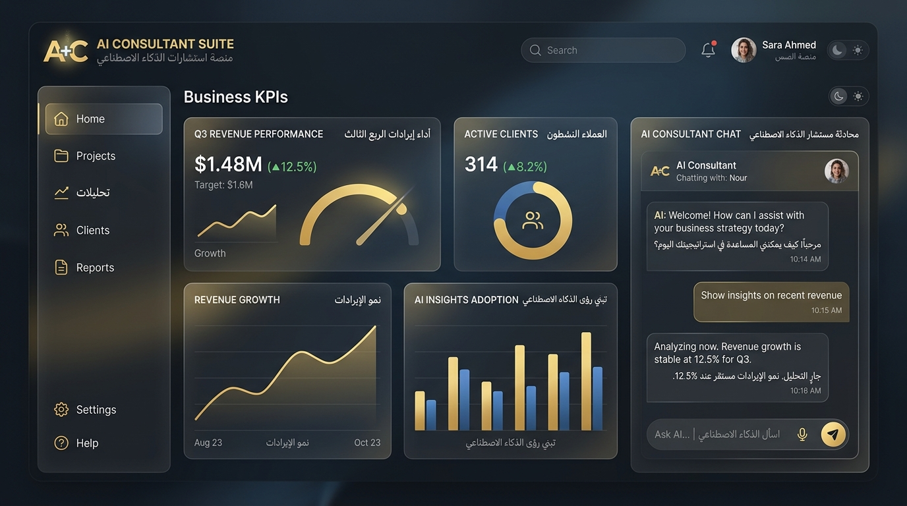

Web Application · AI Integration · 2026
An interactive dashboard leveraging the Gemini API to analyze business performance and generate print-ready strategic audits.

01 · The Problem
Business analysts and tech consultants spend a significant portion of their hours collecting metrics, calculating growth benchmarks, and manually formatting diagnostic reports. This overhead prevents consulting practices from scaling and delays proposal deliveries to prospective clients.
02 · Technical Solution
I developed a responsive, standalone Single Page Application (SPA) built for rapid, client-facing consultations:
03 · The Outcomes
The tool was deployed locally and successfully automated the auditing process. Consultation reports are now generated, structured, and saved as PDFs in **under 2 minutes** instead of 4 hours, allowing the practice to handle higher client volumes.